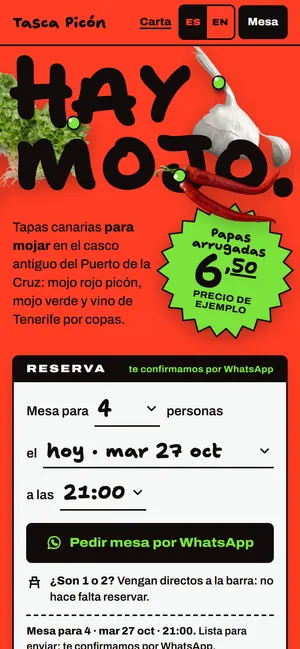
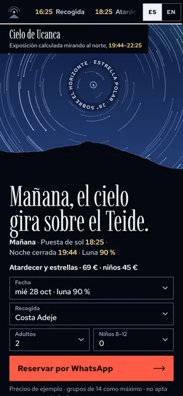
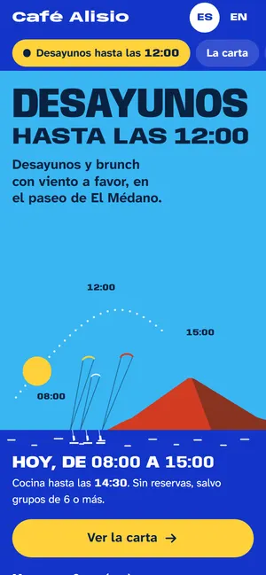
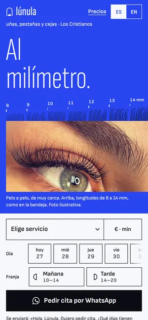
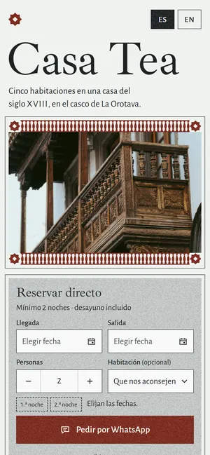
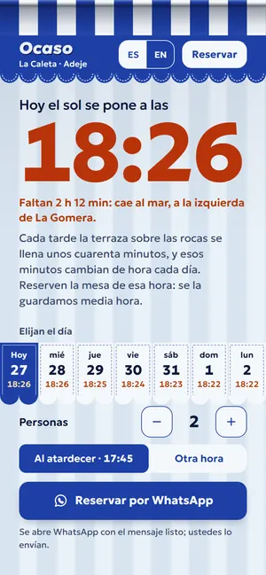
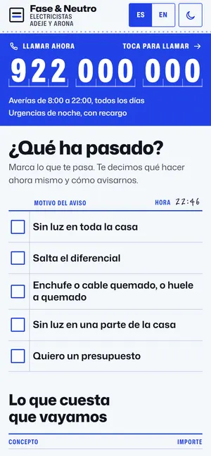

Showroom
Siete mundos de diseño nuevos para negocios de Tenerife. Ábrelos en el móvil.
-

Tasca canaria · Puerto de la Cruz Tasca Picón Un cartel de mercado en rojo mojo. Toca «verde» y la página entera cambia de mojo. Abrir la muestra -

Excursiones de estrellas · Teide Cielo de Ucanca El cielo real de la noche que elijas, girando sobre el Teide. La luna lo cambia. Abrir la muestra -

Café de brunch · El Médano Café Alisio Un cartel que dice la verdad sobre la hora, con el alisio soplando en sus letras. Abrir la muestra -

Uñas, pestañas y cejas · Los Cristianos Lúnula Studio La bandeja de pestañas: precios a la vista y longitudes al milímetro. Abrir la muestra -

Casa rural · La Orotava Casa Tea La página se dibuja y se rellena de arena, como las alfombras del Corpus. Abrir la muestra -

Terraza al atardecer · La Caleta Ocaso El toldo se recoge para el atardecer de hoy, calculado al minuto. Abrir la muestra -

Electricistas · Adeje y Arona Fase & Neutro El parte de trabajo: marca qué ha pasado y el WhatsApp se escribe solo. Abrir la muestra